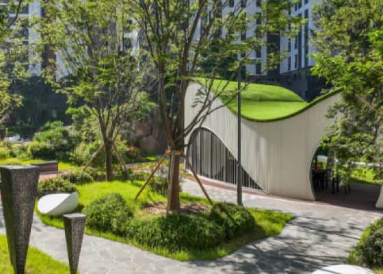
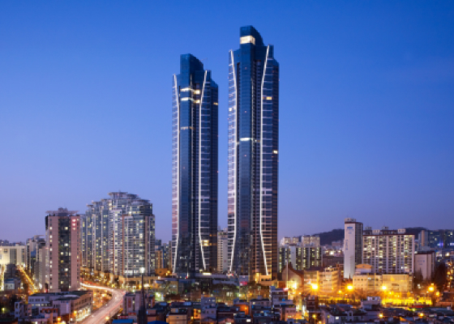
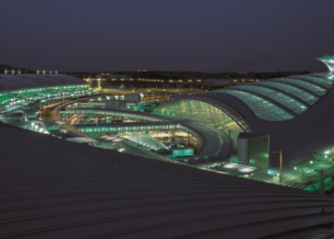
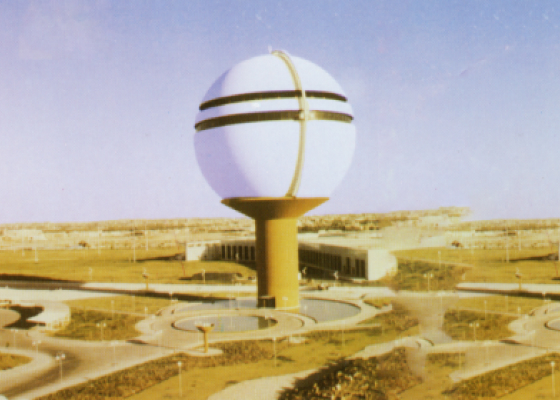

회사소개
A Beautiful Company
Make a Beautiful World
Make a Beautiful World
연혁
금호건설의 집념과 도전의 반세기 역사를 소개합니다
현재 ~ 2011
연구영역 다각화 및 외연 확대

2024 ~ 2021
- 2024. 06. 조경특화 브랜드 '아트시스' 출시
- 2024. 05. 금호건설 주거 브랜드 아테라 런칭
- 2023. 12. 조완석 사장 체제로 조직 개편
- 2023. 09. 임직원 기부활동 "DOVE's (Do Love, Sustainable)" 전개
- 2021. 03. 금호건설(주)로 상호변경
2020 ~ 2013
- 2018. 10. 건설업계 최초 자회사형 장애인 표준사업장 설립 협약 체결
- 2016. 07. 서재환 사장 체제로 조직 개편 충북 증평군 사곡리마을과 1社1村 자매결연
- 2013. 01. 원일우 사장 체제로 조직 개편
2012 ~ 2011
- 2012. 03. 다기능 스마트 스위치, 레드닷 디자인 어워드 수상
- 2011. 10. 베트남 21개 현지 협력사와 ‘우수 협력사 Partnershipㅇㅇㅇㅇㅇㅇㅇㅇㅇㅇ 강화’ MOU 체결
- 2011. 04. UAE 아부다비 공항 관제탑 그랜드 오픈(Grand Open) 경기도 화성시 신천마을과 1社1村 자매결연식
2010 ~ 2001
글로벌 확대

2010 ~ 2009
- 2010. 11. 도심 최대규모 오피스빌딩 센터원(CENTER1) 준공
- 2010. 10. UAE 아부다비 공합 관제탑 준공
- 2009. 09. 베트남 금호아시아나플라자 준공 빛그린어울림마을 1호 조성(홍제동 개미마을)
- 2009. 03. 전력산업기술기준(KEPIC:Korea Electric Power Industry Code) 자격 인증서 취득
2008 ~ 2005
- 2008. 10. 여수시 신재생에너지 사업 참여 MOU 체결
- 2007. 03. 건설업계 최저 재해율 1위 달성
- 2006. 12. 2008년 상반기 건설업계 최다 GD마크 획득
- 2005. 09. 베트남 금호아시아나플라자 착공, 해외사업 재개
2004 ~ 2001
- 2004. 12. 질소,인을 활용한 하수고도처리시스템 K-MBR 日 도레이사, KIST와 공동 개발 완료
- 2003. 05. '1산ㆍ1하천ㆍ1거리 가꾸기' 환경정화활동 시행
- 2001. 11. 광화문 "용비어천가"로 오피스텔 브랜드 첫 선
- 2001. 05. 주상복합 브랜드 "리첸시아" 런칭 _ 여의도 리첸시아 첫 적용
2000 ~ 1991
국내 사업 확대

2000 ~ 1998
- 1999. 07. 플랜트사업 본격화, T-5 비축생산기지 완공으로 대통령 표창 수상 T-5 비축생산기지 완공으로 대통령 표창 수상
- 1999. 03. 금호베스티빌 브랜드 도입 _ 용인 수지 금호베스트빌 1ㆍ2차
- 1999. 02. 금호산업(주)로 상호변경
- 1998. 06. ‘금호베스트빌 APT‘ 매일경제 살기좋은 아파트 선정
1997 ~ 1996
- 1997. ~ 지식경영 캠페인 '1:10:100' 운동 전개
- 1996. 11. 제 22회 전국품질경영대회 품질경영상 대통령상 수상 국내 1호 SOC 민자사업 "인천국제공항고속도로" 첫 삽
- 1996. 02. 수도권 신공항건설공단 우수시공업체 선정
1995 ~ 1991
- 1995. 10. 하수고도처리 기술 KIDEA공법 KIST와 공동 추진
- 1995. 02. 주거공간 고유 브랜드 "금호베스트홈" 도입
- 1994. 04. 국내 최초 PC부문 ISO 9001 인증획득
- 1992. 11. 인천국제공항 사업 참여 _ 활주로, 관제탑 등 전 공종 참여 국내 유일
- 1992. 07. 대한주택공사 우수업체 선정
1990 ~ 1960
창업기

1980년대
- 1989. 12. 건설기술연구소 설립
- 1984. 10. (주)광주고속으로 상호변경
1970년대
- 1979. 01. 필리핀 치코강 댐 건설공사 수주
- 1978. 09. 해외사업 첫 진출_사우디국방항공성으로부터 알슈레일 장교숙소, 화약고 건설공사 수주
- 1978. 04. 사우디아라비아 리야드지사 설립
- 1973. 05. 제일토건 주식회사로 상호변경
1960년대
- 1967. 02. 제일토목건축 주식회사 설립